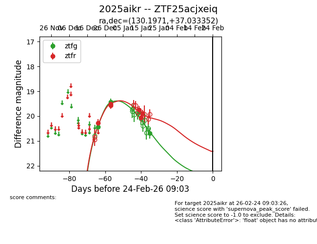
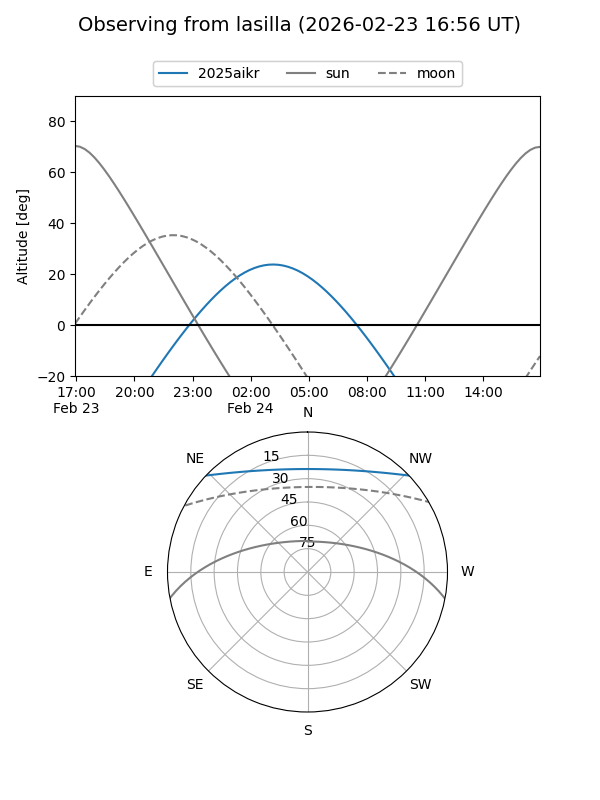
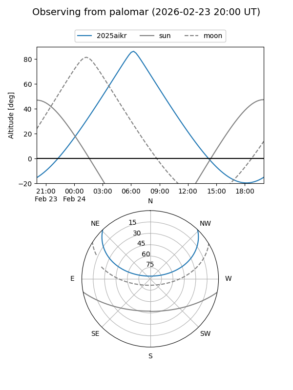
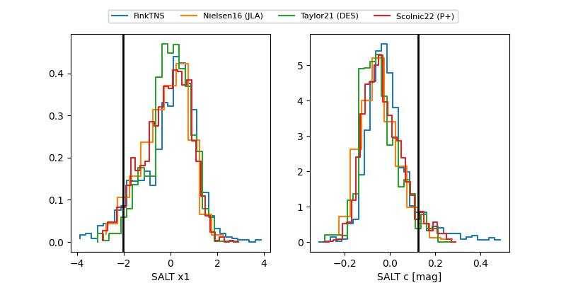

2025aikr
Target 2025aikr at 2025-12-29 19:24
Aliases and brokers:
FINK: fink-portal.org/ZTF25acjxeiq
Lasair: lasair-ztf.lsst.ac.uk/objects/ZTF25acjxeiq
ALeRCE: alerce.online/object/ZTF25acjxeiq
TNS: wis-tns.org/object/2025aikr
YSE: ziggy.ucolick.org/yse/transient_detail/2025aikr
alt names
ZTF25acjxeiq (ztf,fink_ztf)
2025aikr (tns,yse)
Coordinates:
equatorial (ra, dec) = 130.1971,+37.03335
equatorial (HMS+DMS) = 08:40:47.29,+37:02:00.07
galactic (l, b) = (185.4504,+36.93423)
Flags:
Photometry:
last ztfg=19.42, ztfr=19.51
2 ztfg, 2 ztfr detections
Lightcurve

Visibility


Additional plots
